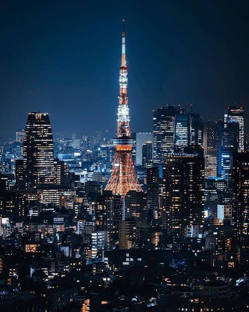

Curated Enclaves
Journey through our selection of Japan's most breathtaking spots, blending traditional culture and future innovation.

Tokyo
The world's most populous metropolitan area, Tokyo, is a hyper-modern metropolis that balances dizzying technology with quiet backstreet shrines. Experience neon skylines, historic temples, luxury shopping in Ginza, and the world's most acclaimed culinary scene.
Book Package
Kyoto
Kyoto is the cultural heart of Japan. Boasting thousands of classical Buddhist temples, gardens, imperial palaces, Shinto shrines, and traditional wooden merchant houses, it offers an immersive step back into Japan's imperial history.
Book Package
Osaka
Osaka is a large port city and commercial center known for its lively street food culture, modern architecture, and historic Osaka Castle. From the colorful lights of Dotonbori to premium shopping districts, Osaka is full of high-energy charm.
Book Package
Nara
As Japan's first permanent capital, Nara is home to significant historic treasures, including the giant Buddha statue at Todai-ji Temple. Nara Park is famous for its hundreds of freely roaming, bowing sika deer, considered sacred messengers.
Book Package
Hakone
Part of the Fuji-Hakone-Izu National Park, Hakone is famous for its hot springs (onsen), natural beauty, and spectacular views of nearby Mt. Fuji across Lake Ashi. It is the ultimate mountain resort sanctuary for relaxation.
Book Package
Hokkaido
Japan's northernmost main island, Hokkaido, is renowned for its wild volcanoes, natural hot springs, and premier ski areas. In the winter it hosts the famous Sapporo Snow Festival, while summer blankets the fields in stunning lavender blossoms.
Book Package
Mount Fuji
Mount Fuji is Japan's highest mountain and an active volcano. An iconic symbol of Japan, it is considered sacred and has inspired artists for centuries. Climb its slopes or enjoy panoramic views from five scenic lakes surrounding it.
Book Package
Hiroshima
Hiroshima is a city of profound history and resilient peace. Visit the historic Hiroshima Peace Memorial Park, and take a short ferry to Miyajima Island to view the majestic floating Torii gate of Itsukushima Shrine.
Book Package